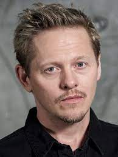

Bron - huvudskådespelare


Sofia Helin

Sofia Helin växte upp utanför Linköping i en by som heter Linghem. Åren 1994–1996 gick hon på Teaterskola och åren 1997–2001 studerade hon i Stockholm vid Teaterhögskolan där hon gick i samma årskurs som Sofia Bach och Joakim Nätterqvist. Hon slog igenom år 2004 med den guldbaggenominerade huvudrollen i Masjävlar där hon spelade rollen Cecilia Algotsdotter i filmatiseringarna av Jan Guillous böcker om Arn. 2011 fick hon huvudrollen i den svensk-danska tv-serien Bron med karaktären polisinspektör Saga Norén. Detta ledde till internationella genombrott, följt av roller i utländska filmer. År 2020 spelade hon en huvudroll som kronprinsessan Märtha av Norge i dramaserien Atlantic Crossing.
Kim Bodnia

Kim Bodnia är född 12 april 1965 och är en dansk skådespelare, författare och regissör. Han blev vida känd för sin roll i Bron. Han blev även internationellt känd för sin huvudroll som knarklangare Frank i Nicolas Winding Refns regidebut Pusher 1996. Idag är han mest känd som Konstantin i Phoebe Waller-Bridges. 2009 vann han Bodilpriset för bästa skådespelare i en biroll och 2014 vann han Monte-Carlo Television Festival Award för enastående skådespelarinsatser i en dramaserie. 2019 fick han en British Academy Television Award för bästa manliga biroll för sin roll i Killing Eve. Kim Bodina hoppade ändå av vid början av säsong 3, eftersom han var jude och antesemetismen växte i Malmö. Kim Bodnia motiverade sitt beslut på följande sätt: Antisemitismen i Malmö, där vi spelade in Bron, växer och det är inte speciellt säkert att vara där som jude. Det gjorde det lättare att hoppa av.
Thure Lindhardt
Thure Lindhardt föddes i Köpenhamn och växte upp i Roskilde. Vid 12 års ålder fick han en roll i Pelle Erövraren. Hans genombrott kom med hans skildring av en pojke med autism i A Place Nearby, tillsammans med Ghita Nörby. Sedan dess har han spelat olika roller i en mängd filmer och serier. Han spelade också en roll som den unge schweiziska gardelöjtnanten Chartrand i filmen Angels & Demons från 2009, regisserad av Ron Howard.
Tillbaka till toppen på sidan